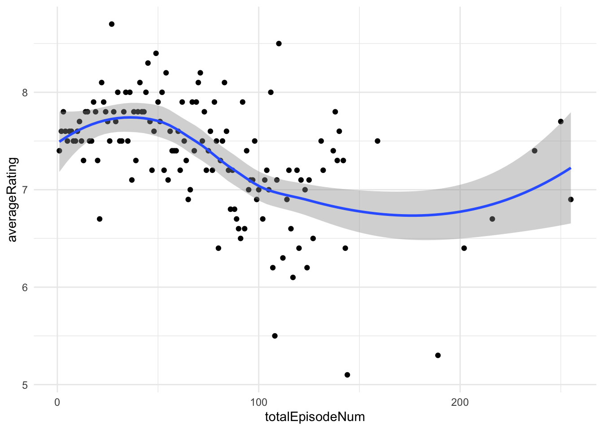

In this project we are taking a deep dive into the realm of IMDB to find what movies are highly rated and successful. Afterwards we are going to based on our analysis create a movie pitch for a brand new remake that will blow Hollywood execs out of the water.
Code
library(tidyverse)library(DT)get_imdb_file <-function(fname){ BASE_URL <-"https://datasets.imdbws.com/" fname_ext <-paste0(fname, ".tsv.gz")if(!file.exists(fname_ext)){ FILE_URL <-paste0(BASE_URL, fname_ext)download.file(FILE_URL, destfile = fname_ext) }as.data.frame(readr::read_tsv(fname_ext, lazy=FALSE))}NAME_BASICS <-get_imdb_file("name.basics")TITLE_BASICS <-get_imdb_file("title.basics")TITLE_EPISODES <-get_imdb_file("title.episode")TITLE_RATINGS <-get_imdb_file("title.ratings")TITLE_CREW <-get_imdb_file("title.crew")TITLE_PRINCIPALS <-get_imdb_file("title.principals")#Data Sub-SamplingNAME_BASICS <- NAME_BASICS |>filter(str_count(knownForTitles, ",") >1)TITLE_RATINGS |>ggplot(aes(x=numVotes)) +geom_histogram(bins=30) +xlab("Number of IMDB Ratings") +ylab("Number of Titles") +ggtitle("Majority of IMDB Titles Have Less than 100 Ratings") +theme_bw() +scale_x_log10(label=scales::comma) +scale_y_continuous(label=scales::comma)
Our first task is to ensure that all our tables are clean. To do that we need to convert our tables into the proper variable type, alot of the variables are just chars so we need to fix that.
As we see there are 132369 movies, 30043 TV series and 156967 TV episodes in our data set.
Who is the oldest living person in our data set?
Because in the dataset NA values are treated for people who haven’t died yer, or have an unknown death date we cant exactly find the answer to this using our dataset. Doing a little research shows that the oldest living actress is Brenda Miller born in 1918.
tconst titleType primaryTitle
1 tt0076759 movie Star Wars: Episode IV - A New Hope
2 tt0080684 movie Star Wars: Episode V - The Empire Strikes Back
3 tt0086190 movie Star Wars: Episode VI - Return of the Jedi
4 tt2527336 movie Star Wars: Episode VIII - The Last Jedi
originalTitle isAdult startYear endYear
1 Star Wars FALSE 1977 NA
2 Star Wars: Episode V - The Empire Strikes Back FALSE 1980 NA
3 Star Wars: Episode VI - Return of the Jedi FALSE 1983 NA
4 Star Wars: Episode VIII - The Last Jedi FALSE 2017 NA
runtimeMinutes genres
1 121 Action,Adventure,Fantasy
2 124 Action,Adventure,Fantasy
3 131 Action,Adventure,Fantasy
4 152 Action,Adventure,Fantasy
No Surprise here, Star Wars episodes IV,V,VI and VIII.
What TV series, with more than 12 episodes, has the highest average rating?
tconst titleType primaryTitle originalTitle isAdult startYear endYear
1 tt0020949 movie Happy Days Happy Days FALSE 1929 NA
2 tt0070992 tvSeries Happy Days Happy Days FALSE 1974 1984
3 tt0102851 movie Happy Days Schastlivye dni FALSE 1991 NA
4 tt0146848 short Happy Days Happy Days FALSE 1936 NA
5 tt0263422 tvMovie Happy Days Happy Days FALSE 2000 NA
6 tt0473954 short Happy Days Happy Days FALSE 1926 NA
7 tt0765833 movie Happy Days Neseli Günler FALSE 1978 NA
8 tt1214961 movie Happy Days Happy Days FALSE 2007 NA
9 tt1437484 tvSeries Happy Days Happy Days FALSE 2008 NA
runtimeMinutes genres
1 80 Comedy,Musical,Romance
2 30 Comedy,Family,Music
3 86 Drama
4 9 Animation,Short
5 78 Drama
6 14 Comedy,Short
7 95 Comedy,Drama,Family
8 153 Drama
9 NA Comedy
`geom_smooth()` using method = 'loess' and formula = 'y ~ x'

It is mostly true that newer the middle of the series run Happy Days steadily dropped off, however by the end of the series it saw some recovery in quality.